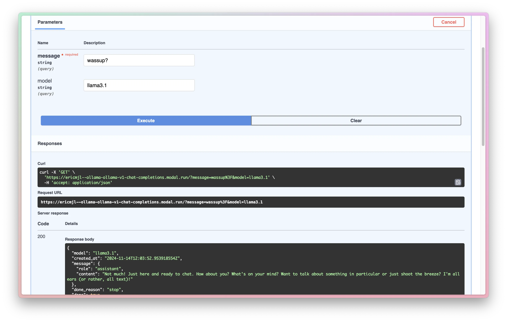

Eric J Ma's Website
written by Eric J. Ma on 2024-11-14 | tags: modal deployment open source api cloud gpu software models ollama large language models
In this blog post, I share my journey of deploying Ollama to Modal, enhancing my understanding of Modal's capabilities. I detail the script used, the setup of the Modal app, and the deployment process, which includes ensuring the Ollama service is ready and operational. I also implement an OpenAI-compatible endpoint that makes it easy to use the deployment with existing tools and libraries. This exploration not only expanded my technical skills but also created a practical solution for using open-source models in production. Curious about how this deployment could streamline your projects?
I recently learned how to deploy Ollama to Modal! I mostly copied code from another source but modified it just enough that I think I have upgraded my mental model of Modal and want to leave notes. My motivation here was to gain access to open source models that are larger than can fit comfortably on my 16GB M1 MacBook Air.
Credits
In this case, I feel obliged to give credit where credit is due:
- The Modal Blog has a lot of great resources.
- The original code by Irfan Sharif was great for my learning journey.
The script
If you're here just for the script, then this is what you'll want:
# file: endpoint.py import modal import os import subprocess import time MODEL = os.environ.get("MODEL", "llama3.1") DEFAULT_MODELS = ["llama3.1", "gemma2:9b", "phi3", "qwen2.5:32b"] def pull(): subprocess.run(["systemctl", "daemon-reload"]) subprocess.run(["systemctl", "enable", "ollama"]) subprocess.run(["systemctl", "start", "ollama"]) wait_for_ollama() for model in DEFAULT_MODELS: subprocess.run(["ollama", "pull", model], stdout=subprocess.PIPE) def wait_for_ollama(timeout: int = 30, interval: int = 2) -> None: """Wait for Ollama service to be ready. :param timeout: Maximum time to wait in seconds :param interval: Time between checks in seconds """ import httpx from loguru import logger start_time = time.time() while True: try: response = httpx.get("http://localhost:11434/api/version") if response.status_code == 200: logger.info("Ollama service is ready") return except httpx.ConnectError: if time.time() - start_time > timeout: raise TimeoutError("Ollama service failed to start") logger.info( f"Waiting for Ollama service... ({int(time.time() - start_time)}s)" ) time.sleep(interval) image = ( modal.Image.debian_slim() .apt_install("curl", "systemctl") .run_commands( # from https://github.com/ollama/ollama/blob/main/docs/linux.md "curl -L https://ollama.com/download/ollama-linux-amd64.tgz -o ollama-linux-amd64.tgz", "tar -C /usr -xzf ollama-linux-amd64.tgz", "useradd -r -s /bin/false -U -m -d /usr/share/ollama ollama", "usermod -a -G ollama $(whoami)", ) .copy_local_file("ollama.service", "/etc/systemd/system/ollama.service") .pip_install("ollama", "httpx", "loguru") .run_function(pull) ) app = modal.App(name="ollama", image=image) @app.cls( gpu=modal.gpu.A10G(count=1), container_idle_timeout=300, ) class Ollama: @modal.build() def build(self): subprocess.run(["systemctl", "daemon-reload"]) subprocess.run(["systemctl", "enable", "ollama"]) @modal.enter() def enter(self): subprocess.run(["systemctl", "start", "ollama"]) wait_for_ollama() subprocess.run(["ollama", "pull", MODEL]) @modal.asgi_app() def serve(self): """Serve the FastAPI application. :return: FastAPI application instance """ return api
Breakdown
Let me break down what I'm doing in each function.
Firstly,
the pull function is used during the image build definition
(more on that later).
I have decided that my image should bake in at least the default models
as defined by the DEFAULT_MODELS list.
DEFAULT_MODELS = ["llama3.1", "gemma2:9b", "phi3", "qwen2.5:32b"] def pull(): subprocess.run(["systemctl", "daemon-reload"]) subprocess.run(["systemctl", "enable", "ollama"]) subprocess.run(["systemctl", "start", "ollama"]) wait_for_ollama() for model in DEFAULT_MODELS: subprocess.run(["ollama", "pull", model], stdout=subprocess.PIPE)
The Image build definition starts with a debian_slim base image.
We then further install other linux system packages
and pip install additional dependencies.
Finally,
we run the pull function
so that we have the pre-baked models ready within the container.
This design choice increases the container size by gigabytes,
but it allows us to sidestep waiting for models to download on-the-fly
when we are running the container live.
image = ( modal.Image.debian_slim() .apt_install("curl", "systemctl") .run_commands( # from https://github.com/ollama/ollama/blob/main/docs/linux.md "curl -L https://ollama.com/download/ollama-linux-amd64.tgz -o ollama-linux-amd64.tgz", "tar -C /usr -xzf ollama-linux-amd64.tgz", "useradd -r -s /bin/false -U -m -d /usr/share/ollama ollama", "usermod -a -G ollama $(whoami)", ) .copy_local_file("ollama.service", "/etc/systemd/system/ollama.service") .pip_install("ollama", "httpx", "loguru") .run_function(pull) )
With the container image defined, I then define the modal App:
app = modal.App(name="ollama", image=image)
This creates a Modal app. From there, I can create the actual app class where execution happens.
@app.cls( gpu=modal.gpu.A10G(count=1), container_idle_timeout=300, ) class Ollama: @modal.build() def build(self): subprocess.run(["systemctl", "daemon-reload"]) subprocess.run(["systemctl", "enable", "ollama"]) @modal.enter() def enter(self): subprocess.run(["systemctl", "start", "ollama"]) wait_for_ollama() subprocess.run(["ollama", "pull", MODEL]) @modal.asgi_app() def serve(self): """Serve the FastAPI application. :return: FastAPI application instance """ return api
In this class,
I am taking advantage of the fact
that I can explicitly define what happens within the container lifecycle.
On build,
after building the image,
we ensure that ollama is enabled,
and as soon as we enter into the image runtime,
we start ollama.
Finally,
we have the serve method decorated with @modal.asgi_app()
that exposes our FastAPI application.
This is the crucial piece that ties everything together -
it tells Modal to serve our FastAPI application,
which includes our OpenAI-compatible endpoint,
making it accessible over HTTP.
I also make sure that we are using a GPU-enabled container.
The serve() method is particularly important here.
By decorating it with @modal.asgi_app(),
we're telling Modal that this method should be used to serve our web application.
The method simply returns our FastAPI api instance,
which contains all our route definitions,
including the OpenAI-compatible /v1/chat/completions endpoint.
Modal takes care of all the underlying infrastructure needed to expose this API to the internet,
including setting up the proper HTTP server and routing.
I have a wait_for_ollama function,
which is used within the App definition:
def wait_for_ollama(timeout: int = 30, interval: int = 2) -> None: """Wait for Ollama service to be ready. :param timeout: Maximum time to wait in seconds :param interval: Time between checks in seconds """ import httpx from loguru import logger start_time = time.time() while True: try: response = httpx.get("http://localhost:11434/api/version") if response.status_code == 200: logger.info("Ollama service is ready") return except httpx.ConnectError: if time.time() - start_time > timeout: raise TimeoutError("Ollama service failed to start") logger.info( f"Waiting for Ollama service... ({int(time.time() - start_time)}s)" ) time.sleep(interval)
This function exists because I noticed
that there were occasions when the Ollama service needed additional wait time
to come live before I could interact with it.
In these circumstances,
having the wait_for_ollama function available
allowed me to avoid having the program error out
just because Ollama wasn't ready at that exact moment.
Deploy
Now, with this Python script in place, we can deploy it onto Modal:
modal deploy endpoint.py
Modal will build the container on the cloud and deploy it:
❯ modal deploy endpoint.py ✓ Created objects. ├── 🔨 Created mount /Users/ericmjl/github/incubator/ollama-modal/endpoint.py ├── 🔨 Created mount ollama.service ├── 🔨 Created function pull. ├── 🔨 Created function Ollama.build. ├── 🔨 Created function Ollama.*. └── 🔨 Created web function Ollama.v1_chat_completions => https://<autogenerated_subdomain>.modal.run ✓ App deployed in 3.405s! 🎉 View Deployment: https://modal.com/apps/<username>/main/deployed/<app_name>
It won't always be ~3 sec; usually, on first build, this will take ~5 minutes or so.
Now,
because of the docs=True parameter set in the v1_chat_completions method decorator,
I have access to the Swagger API that is auto-generated,
which lets me hand-test the API before I try to call on it:

OpenAI-Compatible Endpoint
After my initial deployment, I realized that making the endpoint OpenAI-compatible would make it much easier to integrate with existing tools. The updated code now includes a proper OpenAI-compatible chat completions endpoint that follows the same format as OpenAI's API:
class ChatMessage(BaseModel): """A single message in a chat completion request. Represents one message in the conversation history, following OpenAI's chat format. """ role: str = Field(..., description="The role of the message sender (e.g. 'user', 'assistant')") content: str = Field(..., description="The content of the message") class ChatCompletionRequest(BaseModel): """Request model for chat completions. Follows OpenAI's chat completion request format, supporting both streaming and non-streaming responses. """ model: Optional[str] = Field(default=MODEL, description="The model to use for completion") messages: List[ChatMessage] = Field(..., description="The messages to generate a completion for") stream: bool = Field(default=False, description="Whether to stream the response") @api.post("/v1/chat/completions") async def v1_chat_completions(request: ChatCompletionRequest) -> Any: """Handle chat completion requests in OpenAI-compatible format. :param request: Chat completion parameters :return: Chat completion response in OpenAI-compatible format, or StreamingResponse if streaming :raises HTTPException: If the request is invalid or processing fails """ try: if not request.messages: raise HTTPException( status_code=400, detail="Messages array is required and cannot be empty", ) if request.stream: async def generate_stream() -> AsyncGenerator[str, None]: response = ollama.chat( model=request.model, messages=[msg.dict() for msg in request.messages], stream=True, ) for chunk in response: chunk_data = { "id": "chat-" + str(int(time.time())), "object": "chat.completion.chunk", "created": int(time.time()), "model": request.model, "choices": [ { "index": 0, "delta": { "role": "assistant", "content": chunk["message"]["content"], }, "finish_reason": None, } ], } yield f"data: {json.dumps(chunk_data)}\n\n" final_chunk = { "id": "chat-" + str(int(time.time())), "object": "chat.completion.chunk", "created": int(time.time()), "model": request.model, "choices": [ { "index": 0, "delta": {}, "finish_reason": "stop", } ], } yield f"data: {json.dumps(final_chunk)}\n\n" yield "data: [DONE]\n\n" return StreamingResponse( generate_stream(), media_type="text/event-stream", ) # Non-streaming response response = ollama.chat( model=request.model, messages=[msg.model_dump() for msg in request.messages] ) return { "id": "chat-" + str(int(time.time())), "object": "chat.completion", "created": int(time.time()), "model": request.model, "choices": [ { "index": 0, "message": { "role": "assistant", "content": response["message"]["content"], }, "finish_reason": "stop", } ], "usage": { "prompt_tokens": -1, # Ollama doesn't provide token counts "completion_tokens": -1, "total_tokens": -1, }, } except Exception as e: raise HTTPException( status_code=500, detail=f"Error processing chat completion: {str(e)}" )
This implementation provides both streaming and non-streaming responses
in the exact same format as OpenAI's API.
The endpoint is accessible at /v1/chat/completions,
making it a drop-in replacement for OpenAI's API
in tools like LlamaBot that use LiteLLM as their API switchboard.
The endpoint supports:
- Full chat history with multiple messages
- Streaming responses for real-time text generation
- OpenAI-compatible response format
- Error handling with appropriate HTTP status codes
With this in place, I can now use my Modal-deployed Ollama endpoint with any tool that supports OpenAI's API format. For example, with LlamaBot, I just need to specify the base URL of my Modal deployment:
from llamabot import SimpleBot bot = SimpleBot( model_name="ollama/qwq", # Specifying the Ollama model api_base="https://<my-modal-deployment>.modal.run/v1", # Point to Modal deployment system_prompt="You are a helpful assistant.", ) response = bot("Hello!")
This makes it incredibly easy to experiment with different open-source models while maintaining compatibility with existing tools and workflows.
Cite this blog post:
@article{
ericmjl-2024-deploying-modal,
author = {Eric J. Ma},
title = {Deploying Ollama on Modal},
year = {2024},
month = {11},
day = {14},
howpublished = {\url{https://ericmjl.github.io}},
journal = {Eric J. Ma's Blog},
url = {https://ericmjl.github.io/blog/2024/11/14/deploying-ollama-on-modal},
}
I send out a newsletter with tips and tools for data scientists. Come check it out at Substack.
If you would like to sponsor the coffee that goes into making my posts, please consider GitHub Sponsors!
Finally, I do free 30-minute GenAI strategy calls for teams that are looking to leverage GenAI for maximum impact. Consider booking a call on Calendly if you're interested!